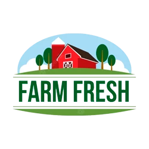
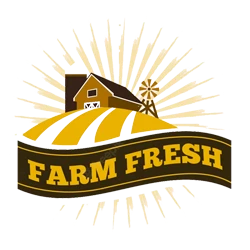
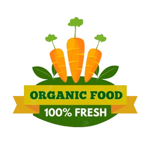
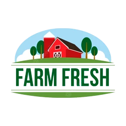
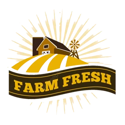
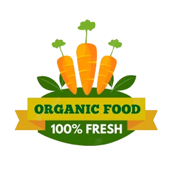

¡Chau estrés! Calculamos tus compras de vegetales por vos
Nos encanta ayudarte a preparar tus comidas con la cantidad justa de vegetales. Si querés cocinar varias recetas en la semana para vos y tu familia, solo tenés que contarnos cuáles son, para cuántas personas ¡Y listo! Nosotros nos ocupamos de calcular cuántos vegetales necesitás y te los enviamos a la puerta de tu casa. Así, no te va a faltar ni sobrar nada, y vas a disfrutar de ricas comidas con los vegetales frescos que más te gustan. ¡Qué fácil, ¿no?!